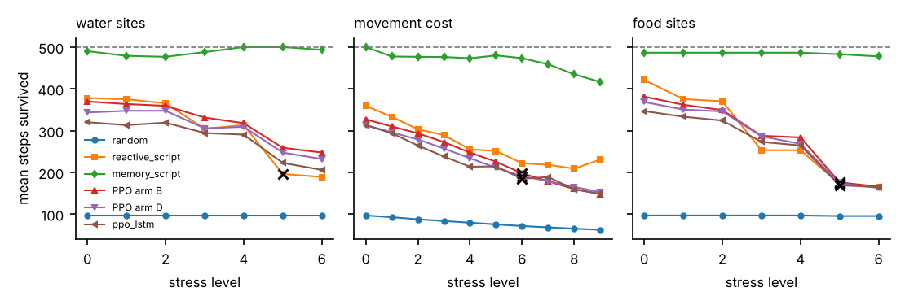
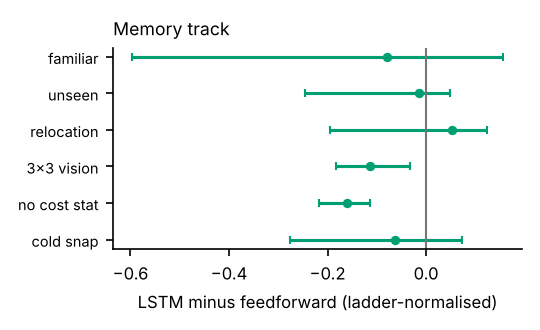
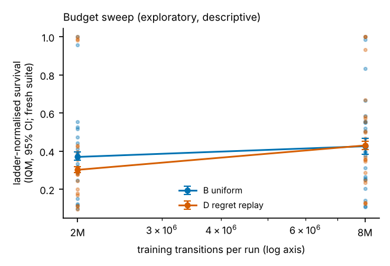
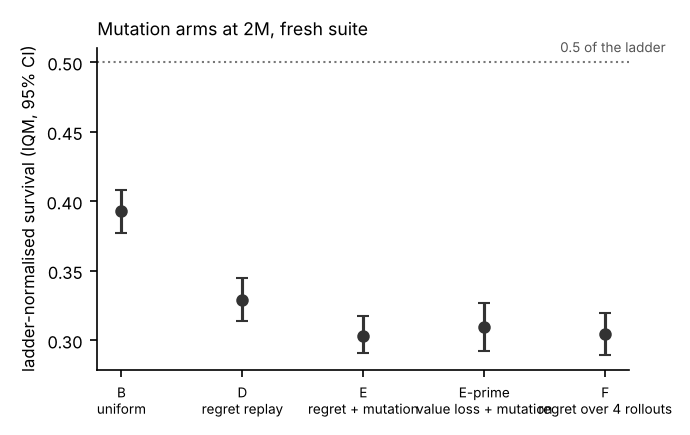

Technical report
The report is the product; the site, video and package exist to get you to it and let you trust it.
Raw data downloads
episodes.csv · aggregate.csv · comparisons_appendix.csv · ablations.csv · headline.json · stress.json · probes.json · memory.json · manifest.json · report.pdf
AdaptArena v2: does training where the policy fails most survive unseen shifts better?
1. Question
Does sampling training scenarios by planner regret (reference-planner survival minus policy survival) produce agents that survive unseen shifts better than uniform randomization, at equal transition budget? This is a hypothesis, and the report is written so that either answer is reportable. Arms: A specialist (one fixed layout), B uniform randomization (plain domain randomization, [Tobin et al., Domain Randomization for Transferring Deep Neural Networks from Simulation to the Real World, IROS 2017]), C replay prioritised by positive value loss, D replay prioritised by planner regret; C and D share one buffer implementation, so the score is the only difference. Two comparisons were declared in advance (D vs B, D vs C); everything else is exploratory.
Positioning. Minigrid [Chevalier-Boisvert et al., Minigrid & Miniworld, NeurIPS Datasets and Benchmarks 2023] and Procgen [Cobbe et al., Leveraging Procedural Generation to Benchmark Reinforcement Learning, ICML 2020] are established generalisation benchmarks and Craftax [Matthews et al., Craftax: A Lightning-Fast Benchmark for Open-Ended Reinforcement Learning, ICML 2024] is a fast survival-style benchmark. What this project adds is narrower: a full-information reference planner that yields solvability certificates and exact regret on every scenario, bit-exact integer simulator state, controlled interventions with stress curves, and a locked statistical protocol. Replay-guided environment design is not new: Prioritized Level Replay uses a value-loss score as a regret proxy [Jiang, Grefenstette, Rocktäschel, Prioritized Level Replay, ICML 2021; Jiang et al., Replay-Guided Adversarial Environment Design, NeurIPS 2021], and PAIRED uses regret directly [Dennis et al., Emergent Complexity and Zero-shot Transfer via Unsupervised Environment Design, NeurIPS 2020]. Here regret is cheap because the world is small, which is a limitation of the setting rather than evidence for a general method. This is not a new RL algorithm and no general claim about regret-guided training is made.
2. Environment
AdaptArena-Survival-v1: a 15×15 grid, six actions, reward 1 per living step, 500-step horizon. Energy and hydration are integers in hundredths (0 to 10000),
drains are integers and cost multipliers are integer percents, so NumPy, a future JAX port and every machine produce identical SHA-256 state hashes.
The observation is a 9×9 agent-centred local view with 8 channels plus an 11-value stats vector (energy, hydration, cold, previous action one-hot,
previous action valid, energy drained last step). Invalid moves pay the movement surcharge, invalid interactions only the base drain; simultaneous death causes are
all stored and the primary reason follows hazard, dehydration, starvation. A full-information search planner sees the map, respawn and weather schedules and
returns a plan that survives 500 steps; each plan is replayed in the environment to verify it, and on tiny maps the planner is cross-checked against exhaustive search.
A scenario enters any suite only if the planner certifies it. The planner is a strong reference, never called optimal. Throughput on Intel(R) Xeon(R) Processor @ 2.80GHz (4 cores): 18,499 steps/s for the scalar reference implementation and 32,158 (8 envs) to 186,942 (256 envs) steps/s for the vectorised batch environment, including observation construction; every experiment budget below was sized against these numbers.
Difficulty calibration (validation seeds only, before any learned policy ran; constants frozen in the analysis plan):
| Condition (validation) | random | reactive script | memory script | planner |
|---|---|---|---|---|
| familiar | 105 | 395 | 500 | 500 |
| unseen_layout | 87 | 361 | 500 | 500 |
| scarce_food | 89 | 196 | 500 | 500 |
| scarce_water | 88 | 183 | 467 | 500 |
| higher_move_cost | 71 | 352 | 500 | 500 |
| cold_snap | 88 | 238 | 471 | 500 |
| combined_shift | 71 | 107 | 425 | 500 |
3. Methods
Learner. PPO written from scratch in one file (Huang et al., CleanRL: High-quality Single-file Implementations of Deep RL Algorithms, JMLR 2022 style; Schulman et al., Proximal Policy Optimization Algorithms, 2017; Schulman et al., High-Dimensional Continuous Control Using Generalized Advantage Estimation, ICLR 2016): vectorised rollouts, GAE with bootstrap on truncation and never on death, clipped surrogate, entropy bonus, advantage normalisation, linear learning-rate decay, gradient clipping, and a recurrent variant on 64-step sequence chunks with hidden-state resets at episode boundaries (the stretch SSM is a small Mamba-style selective state-space block [Gu and Dao, Mamba: Linear-Time Sequence Modeling with Selective State Spaces, 2023], trained with the same loop; it was not run in this tier). It is validated by unit tests (hand-computed GAE with one death and one truncation, ratio 1 and clip fraction 0 on the first epoch, overfitting one batch, a tiny solvable environment, same-seed reproducibility, LSTM and SSM sequence pass equal to the step-by-step pass) and by the parity gate against Stable-Baselines3 [Raffin et al., Stable-Baselines3, JMLR 2021]. Tuned (learning rate, entropy coefficient) on the feedforward sweep: 0.001, 0.003. The best cell sits on the edge of the grid and the 300k-transition sweep favours fast starters, a limitation of the protocol. The LSTM sweep was uninformative (every cell within noise of an untrained policy: validation survival 100 to 107), so by a dated amendment recorded before any memory-track run the LSTM and SSM use the feedforward pair; this is a recorded difference in tuning effort, and the memory-track comparison is not called controlled with respect to tuning.
Parity gate with SB3. Both implementations trained with the same hyper-parameters, environment, reward scaling and transition budget on 10 seeds each. Final IQM survival: own 216.5 [203.1, 229.0], SB3 215.6 [201.5, 227.2]; each lies inside the other's interval; mean curves overlap the other's seed band at 100% of evaluation points (threshold 80%). Gate passed.

Protocol. 10 seeds per arm at 2,000,000 transitions each (counted across all environments). Evaluation uses the locked test suite: 7 conditions × 50 planner-certified scenarios,
deterministic actions as the primary mode, identical scenarios for every arm. Statistics follow Agarwal et al., Deep Reinforcement Learning at the Edge of the Statistical Precipice, NeurIPS 2021: IQM with stratified bootstrap confidence intervals, optimality gap against the planner,
probability of improvement, performance profiles, with the training seed within a condition as the unit of analysis. The analysis plan (hypotheses, arms, seed counts, metrics, thresholds, parity criteria, memory predictions) was hashed
(936d3e3909573fa9…) and committed to git before the test suite was generated; the harness refuses to open the suite otherwise and logs every access. Checkpoints are chosen by highest mean validation survival, earlier wins ties.
4. Results

Pre-declared outcome. Uniform randomization wins here; see the diagnosis of why regret misled. (rule fired: D_loses_to_B). No condition was saturated by every arm, so no condition is excluded for saturation.
| Arm | Aggregate IQM [95% CI] | Optimality gap | Training cost |
|---|---|---|---|
| A: Specialist | 0.01 [0.00, 0.02] | 0.88 | 20 min/run |
| B: Uniform randomization | 0.39 [0.37, 0.40] | 0.58 | 18 min/run |
| C: Replay by value loss | 0.34 [0.32, 0.35] | 0.60 | 17 min/run |
| D: Replay by planner regret | 0.32 [0.30, 0.33] | 0.64 | 18 min/run, 4894 planner calls (22 s) |
| Comparison | IQM difference [CI] | P(improvement) [CI] | Claim status |
|---|---|---|---|
| D vs B (pre-declared) | -0.07 [-0.09, -0.05] | 0.19 [0.12, 0.27] | not supported |
| D vs C (pre-declared) | -0.02 [-0.04, -0.00] | 0.38 [0.28, 0.48] | not supported |
Secondary robustness check, sampled actions (kept in its own file and never mixed into the aggregate above): arm A IQM 0.017; arm B IQM 0.492; arm C IQM 0.458; arm D IQM 0.431. The ordering of the arms is unchanged.
Under the combined shift, the D−B difference is -0.02 [-0.02, -0.00] (exploratory). Training cost for arm D includes planner calls; every arm used the same transition budget.
Diagnosis of why regret did not help (exploratory; descriptive numbers from the headline runs and fresh rollouts, not part of the pre-declared comparisons). (1) In this training distribution the planner certified 100% of sampled scenarios, so planner survival is the 500-step cap everywhere and regret reduces to the policy's shortfall; there were no unsolvable scenarios for the planner to steer the curriculum away from, which is the one thing a planner adds over a value-loss score. (2) At equal budget, 48% of arm D's episodes (4604 replays vs 4894 fresh scenarios on average) and 48% of arm C's replayed stored scenarios, so each replay arm trained on roughly half as many distinct scenarios as arm B. (3) What counts as hard is not a property the scenario parameters reveal: a gradient-boosted model of survival on the six scenario parameters has cross-validated R² of 0.02, and the top-priority quartile of the buffer is within 3% of the buffer mean on every parameter (companion panel). Hardness lives in layout geometry and timing. (4) The score is noisy: the rank correlation of one scenario's survival across two independent sampled rollouts is 0.60 (range 0.54 to 0.64), so roughly a third or more of the ranking is action-sampling noise. Arm D's training-time episode survival (291) is below arm B's (372), consistent with replay concentrating on scenarios the policy fails. A reading consistent with these numbers is that prioritising shortfall in a fully solvable, high-variance distribution spends half the budget re-visiting a few idiosyncratic hard layouts at the cost of diversity; this was not tested with a controlled intervention (for example a lower replay probability) and should be read as a hypothesis.
5. What it learned

stress.json.Breaking points: memory_script (water): none within 10 levels; ppo_ff_armB (water): none within 10 levels; ppo_ff_armD (water): none within 10 levels; ppo_lstm (water): none within 10 levels; memory_script (cost): none within 10 levels; ppo_ff_armB (cost): level 6; ppo_ff_armD (cost): level 6; ppo_lstm (cost): level 6.
Probes (each paired with what it does not show). Hydration threshold: constructed states with the stat overwritten, so behaviour off-distribution. Distilled depth-3 tree agrees with the policy on 37% of held-out states (tree survival 80 vs policy 382); agreement is approximation, not the policy's logic. Occlusion heatmaps show input sensitivity only; the training time machine shows when behaviours appear, not why. The point-of-no-return probe forks recorded states every 25 steps and asks the planner for a certificate; it is valid for the planner's search power, not a proof that no plan exists.
Red team. reactive_script: worst certified-solvable scenario scored -0.01 (survival 73); memory_script: worst certified-solvable scenario scored 0.05 (survival 91); ppo_ff_armB_seed0: worst certified-solvable scenario scored -0.08 (survival 71); ppo_ff_armD_seed0: worst certified-solvable scenario scored -0.11 (survival 56) after 400+ candidates each; the five most instructive are in the failure museum with templated narration (no language model).

Ablation effects (ladder-normalised survival vs default, 5 seeds): gamma_0.9: -0.155 [-0.177, -0.137] (hurts); gamma_0.999: 0.007 [-0.033, 0.046] (no measurable effect (interval includes zero)); vision_5: -0.021 [-0.049, 0.008] (no measurable effect (interval includes zero)); vision_3: -0.105 [-0.130, -0.083] (hurts); no_prev_action: -0.109 [-0.138, -0.083] (hurts); no_cost_stat: 0.013 [-0.021, 0.050] (no measurable effect (interval includes zero)); reward_naive: -0.002 [-0.034, 0.032] (no measurable effect (interval includes zero)); reward_potential: -0.033 [-0.067, 0.004] (no measurable effect (interval includes zero)); timeout_as_death: -0.003 [-0.044, 0.043] (no measurable effect (interval includes zero)).
Naive shaping, exploit check: the fraction of valid interactions taken with a stat at 90% or more was 26% under the naive per-interaction bonus, 27% under potential-based shaping and 29% under the sparse reward: no sign of the exploit by this metric.

| Shift | Locked prediction (recurrent vs feedforward) | Scored |
|---|---|---|
| familiar and unseen layouts | recurrent ahead | miss |
| resource relocation | recurrent loses most of its lead | miss |
| vision reduced to 3x3 | recurrent clearly ahead | miss |
| movement-cost increase, energy-cost stat removed | recurrent holds survival better | miss |
| cold snap | no separation | hit |
1 of 5 locked predictions were hits; the rest are scored as written, without revision. The recurrent policy did not beat the feedforward policy where memory was predicted to help. Best-checkpoint validation survival was 232 for the LSTM (5 seeds) vs 263 for the feedforward policy (10 seeds). Caveats that bear on how to read this: LSTM and SSM share the feedforward-selected hyper-parameters (see the amendment above), recurrent training uses 64-step truncated chunks, the LSTM has 5 seeds against 10, and a recurrent policy may need more than the 2M-transition budget the feedforward policy was sized for. The result says the memory hypothesis was not supported at this budget, not that memory cannot help.
Recurrent-state probe (held-out episodes, shuffled-label control): steps-since-water R² -0.28 from the hidden state vs -0.03 shuffled and 0.00 from the current observation alone; direction accuracy 0.43 vs 0.29 shuffled (majority class 0.31). This shows whether memory holds task information, and nothing more.
Int8 post-training quantization (stretch, exploratory, measured on Intel(R) Xeon(R) Processor @ 2.80GHz only): ppo_ff: retention IQM 0.99 [0.97, 1.01], 1623→415 kB, latency 0.34→0.30 ms (batch 8, 1 thread); ppo_lstm: retention IQM 1.01 [0.95, 1.07], 1702→436 kB, latency 0.47→0.44 ms (batch 8, 1 thread).
The debugging story

The first PPO runs sat near random-level survival on a scenario the planner solves. The diagnostics pointed at the optimiser, not the environment: the value loss was 57 on average over the first 20 updates (vs 0.005 after the fix) while entropy barely moved. With a reward of 1 per step and γ = 0.99, returns are around 100, so the value-loss gradient dominated the single joint gradient-norm clip (0.5) and left the policy gradient almost nothing. Scaling the learner's reward by 0.01 (the environment and every reported survival number are untouched) solved the scenario in 18 updates, whereas the unscaled run reached 179 of 200 after 150 updates. The very first failing run (which also showed approximate-KL spikes above 6) was observed during development and not retained; the figure is the regenerated version of the same comparison, which reproduces the failure mode as slow learning rather than the spikes. Kept in results/<tier>/debug/.
6. Limitations
- One small custom environment. Any statement about regret-guided training holds only under this benchmark, with these limits; nothing is claimed for domain randomization in general.
- Regret is cheap here because a planner exists. In most environments it is unobservable.
- The planner is a depth-first search over resource-visit macros with a node cap and hazards treated as walls; a scenario without a certificate may still be solvable. It is a reference, not an optimum.
- Probes show behaviour and sensitivity, not reasoning; heuristic labels (blind or blunder) are suggestions.
- Compute: 10 seeds × 2,000,000 transitions per arm; ablations 5 seeds × 600,000; memory track 5 seeds (LSTM, 2,000,000) and 5 seeds for the 3×3-vision and no-cost-stat variants (1,000,000); tuning sweep at 300,000 transitions with 3 seeds per cell. These sizes were fixed before results existed. Training reproducibility is same machine and same software; evaluating a fixed checkpoint is bit-exact.
- Hardware and speed statements apply to the named machine only. No claim is made about SSM or quantized hardware speed or energy beyond what was measured there.
- The Play page uses Pyodide with the same Python core; it was tested in headless Chromium, not across browsers or phones.
7. Reproducibility
make reproduce TIER=smoke|dev|full runs every stage behind its gate (smoke: minutes on a laptop, 1 seed, in CI on every commit; dev: 3 seeds, 20 scenarios per condition; full: the published benchmark). Config hashes and checksums are in manifest.json; each stage writes a resumable results folder with manifests, episode CSVs, aggregate CSVs, training metrics, replays and a lockfile. Claims in the ledger link to their episode data. Policy weights are omitted from the repository except released checkpoints (model cards in releases/).
Part II. AdaptArena v2.1
II.1 The specialist diagnostic
Arm A's pooled IQM of 0.010 is a finding, not a bug. The pooled number averages seven conditions, six of which use layouts the specialist never saw. On its own training distribution it scores 0.81 of the ladder (423 steps of 500) and on fresh layouts 0.01. An earlier reading of the pooled figure as 'random level even on its own layout' was wrong.
II.2 Selection audit diagnostic
A run's best_val is the maximum of about 13 noisy evaluations on the suite that chose the checkpoint, so it runs high. Every selected checkpoint was re-scored on suite_val_s1.json, a different validation suite (mean survival in steps):
| Group | runs | best_val | re-scored | gap |
|---|---|---|---|---|
| headline | 40 | 223.3 | 210.2 | 13.1 |
| ablations | 50 | 167.9 | 165.0 | 3.0 |
| parity | 10 | 224.5 | 216.9 | 7.5 |
| memory_lstm | 15 | 159.1 | 151.1 | 8.0 |
| memory_ff | 10 | 184.4 | 175.6 | 8.7 |
The v2 ablation tables were scored on the selection suite. Re-scored on the other suite, the effects with intervals clear of zero are: gamma_0.9, vision_5, vision_3, no_prev_action, timeout_as_death. The v2 rows stay in the ledger next to the v2.1 rows, with dates.
II.3 Training throughput diagnostic
One arm-B job runs at 1889 steps/s; four parallel jobs aggregate 7874 steps/s on Intel(R) Xeon(R) Processor @ 2.80GHz. Time share in a job: validation 2%, rollout forward 21%, env step 6%, obs build 4%, gae 1%, update 61%. Stop rule (plan 3.4): no change worth more than 1.2x (best measured 1.17x, fast_rollout). No speed-up adopted; fast_rollout stays off by default. Phase 5 runs at the v2 speed. The earlier spread of 1.1k to 2.1k steps/s in the v2 logs was not core sharing.
II.4 Memory diagnostics diagnostic exploratory
Imitation ceiling. The memory script scores 0.954 of the ladder. Clones trained by cross-entropy on 989,110 script samples (2000 episodes), no reinforcement learning:
| clone | suite_val | suite_val_s1 |
|---|---|---|
| ff | 0.201 | 0.176 |
| lstm_w64 | 0.182 | 0.200 |
| lstm_w256 | 0.138 | 0.152 |
DAgger-lite (script labels on the learner's own states, aggregated, retrained): ff: 0.20 → 0.24 → 0.36 → 0.42; lstm_w256: 0.17 → 0.28 → 0.27 → 0.32 (round 0 to last, suite_val).
Hand-fed map. A feedforward policy given the script's dead-reckoning map as three extra 9×9 channels (remembered food, remembered water, known floor; this environment has no shelters) scores 0.385 [0.349, 0.423] against plain feedforward 0.397 [0.360, 0.436] on suite_val (5 seeds, 2M); difference -0.012 [-0.065, 0.042]; 0.46 of the script.
LSTM retune. Stage 1 best: lstm_lr0.002_ent0.01; stage 2 winner: lstm_window256; window 256 minus window 64 0.044 [0.018, 0.067].
Retuned LSTM, 4 seeds: 0.121 [0.088, 0.165] vs feedforward arm B 0.351 [0.329, 0.372] on suite_val_s1; difference -0.229 [-0.270, -0.181].
| Prediction (locked before any Phase 4 run) | Criterion | Grade |
|---|---|---|
| P1 | LSTM clone at least 0.9 of the script, feedforward clone below 0.6 | partial |
| P2 | map-fed feedforward at least 0.8 of the script's score at the full budget and above plain feedforward with an interval excluding zero | miss |
| P3 | window 256 beats window 64 with an interval excluding zero | hit |
Verdict. Both clones stay well below the script (best 0.19 and 0.21 of its score for the LSTM and feedforward clone). DAgger rounds lift them only to 0.44 (feedforward) and 0.34 (LSTM), so the shortfall is not just covariate shift. A hand-fed map does not help reinforcement learning (0.46 of the script, difference from plain feedforward -0.012), and the retuned LSTM stays below feedforward (-0.229 on the validation suite not used for selection). This does not separate the three explanations: no route reaches the script, so the data neither show that the architecture cannot hold the memory the task needs, nor that reinforcement learning missed a memory it could have used, nor that memory is unneeded. What it does rule out is a quick fix by a larger backpropagation window (it helps the LSTM a little, which still stays far below feedforward), a hand-fed map, or retuning the learning rate and entropy at these budgets.
II.5 Budget sweep exploratory

| Budget | B | D | D minus B |
|---|---|---|---|
| 2M | 0.370 [0.353, 0.396] | 0.302 [0.286, 0.318] | -0.068 [-0.097, -0.045] |
| 8M | 0.426 [0.382, 0.467] | 0.430 [0.408, 0.451] | 0.004 [-0.042, 0.053] |
Both arms rise and the D minus B interval includes zero: the v2 gap closes with budget, and regret neither helps nor hurts. With 3 seeds the intervals are wide and no claim is labelled supported. The 20M budget points were not run (cut for compute: about 720 steps/s per job after a host change, so one 20M job needs about 7.7 hours). The sweep is reported at 2M and 8M only.
II.6 Mutation arms confirmatory

| Arm | IQM [95% CI] |
|---|---|
| B uniform | 0.393 [0.377, 0.408] |
| D regret replay | 0.329 [0.314, 0.345] |
| E regret + mutation | 0.303 [0.291, 0.317] |
| E-prime value loss + mutation | 0.309 [0.292, 0.327] |
| F regret over 4 rollouts | 0.304 [0.289, 0.320] |
| Comparison | Tier | IQM difference | P(improvement) | Status |
|---|---|---|---|---|
| E vs B | confirmatory | -0.090 [-0.110, -0.069] | 0.171 [0.111, 0.236] | not supported (reversed) |
| E vs E-prime | confirmatory | -0.006 [-0.028, 0.016] | 0.459 [0.360, 0.559] | not supported (interval includes zero) |
| E vs D | exploratory | -0.026 [-0.046, -0.005] | 0.388 [0.297, 0.481] | not supported (reversed) |
| F vs D | exploratory | -0.025 [-0.047, -0.003] | 0.422 [0.330, 0.519] | not supported (reversed) |
| F vs B | exploratory | -0.089 [-0.110, -0.067] | 0.201 [0.133, 0.274] | not supported (reversed) |
Pre-declared outcome row. E ties or loses to B: the v2 conclusion stands under a fairer buffer. Every learned arm stays below 0.5 of the planner-random ladder: the experiment is learner-limited, and the arms cannot be separated at this competence.
Arm E buffer logs (mean over seeds): repeat fraction 0.35, distinct scenarios 5958, uncertified child rate 0.00, acceptance rate 0.87.
II.7 SSM and int8 exploratory
SSM (rung 8): not run. Plan cut order puts SSM and int8 early. Measured SSM training speed was about 95 steps/s per job on the named 4-core Xeon (51,200 steps in about 9 minutes). The stop-rule tuning pass (3 learning rates x 3 seeds x 500k) alone needs about 4.5 hours, and 5 seeds at 2M about 6 hours each, on top of the other queued stages. The LSTM, which is cheaper, stays near random level at these budgets (best validation survival about 110 steps), so a trained SSM was not expected. Rung 8 stays empty; nothing about the SSM is claimed.
| rung | seeds | float32 | int8 | retention | action agreement | size |
|---|---|---|---|---|---|---|
| ppo_ff | 10 | 0.351 | 0.334 | 0.951 [0.906, 1.001] | 0.979 | 1623 → 415 kB |
| ppo_lstm | 4 | 0.121 | 0.136 | 1.119 [0.949, 1.305] | 0.933 | 1702 → 436 kB |
Dynamic int8 on Intel(R) Xeon(R) Processor @ 2.80GHz, scored on suite_val_s1. int8 parts: ppo_ff: actor.0._packed_params:LinearPackedParams, actor.0:Linear, actor.2._packed_params:LinearPackedParams, actor.2:Linear…; ppo_lstm: cell:LSTMCell, enc._packed_params:LinearPackedParams, enc:Linear, pi._packed_params:LinearPackedParams…. Activations and recurrent state stay float32. No claim about edge devices.
II.8 Gamma re-run with return normalization exploratory
| gamma | v2 (fixed reward scale) | normalized returns |
|---|---|---|
| 0.9 | 0.037 [0.032, 0.043] | 0.046 [0.042, 0.048] |
| 0.99 | 0.216 [0.185, 0.248] | 0.162 [0.134, 0.193] |
| 0.999 | 0.218 [0.180, 0.256] | 0.161 [0.138, 0.188] |
5 seeds, 600k steps, suite_val_s1. Rows that fired by the stored rule: penalty shrinks or vanishes. Gamma 0.9 penalty: v2 0.179 [0.146, 0.211], normalized 0.116 [0.088, 0.148].
II.9 Limitations (updated)
- The fresh suite was opened only through the access harness; its generation attempts and the unpushed tag are recorded in the amendments file.
- Tags are unsigned and could not be pushed from the build environment; the lock commit hash is recorded instead.
- With 3 seeds at 8M and 20M the budget sweep is descriptive. Timing and weather seeds and layouts in mutation are re-rolled inside the training split, a stricter bound than the plan's 'any'.
- The map-fed, retune and SSM results are exploratory, scored on validation suites, with 5, 3 and 5 seeds.
- Cut for compute, following the plan's cut order and recorded in
results/full/v2_1/: the 20M budget points, the SSM stage, and the retuned LSTM's 10 seeds (4 were run, so int8 for the LSTM uses 4 seeds, below the plan's 5). - Speed and int8 statements apply to the named machine only. No edge-device or energy claim is made.
References
- Chevalier-Boisvert et al., Minigrid & Miniworld, NeurIPS Datasets and Benchmarks 2023
- Cobbe et al., Leveraging Procedural Generation to Benchmark Reinforcement Learning, ICML 2020
- Matthews et al., Craftax: A Lightning-Fast Benchmark for Open-Ended Reinforcement Learning, ICML 2024
- Jiang, Grefenstette, Rocktäschel, Prioritized Level Replay, ICML 2021
- Jiang et al., Replay-Guided Adversarial Environment Design, NeurIPS 2021
- Dennis et al., Emergent Complexity and Zero-shot Transfer via Unsupervised Environment Design, NeurIPS 2020
- Agarwal et al., Deep Reinforcement Learning at the Edge of the Statistical Precipice, NeurIPS 2021
- Huang et al., CleanRL: High-quality Single-file Implementations of Deep RL Algorithms, JMLR 2022
- Raffin et al., Stable-Baselines3, JMLR 2021
- Schulman et al., Proximal Policy Optimization Algorithms, 2017
- Schulman et al., High-Dimensional Continuous Control Using Generalized Advantage Estimation, ICLR 2016
- Gu and Dao, Mamba: Linear-Time Sequence Modeling with Selective State Spaces, 2023
- Tobin et al., Domain Randomization for Transferring Deep Neural Networks from Simulation to the Real World, IROS 2017